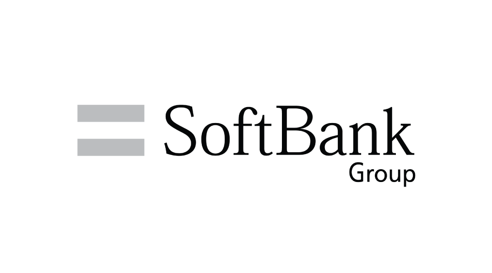

-
Sunday, May 31, 2020
-

Why do you want to work for SB Technology? SB Technology
-
What I would like to do as a member of society is to have a positive influence on our customers and solving social issues by using advanced technology. That is because I am convinced of the future society that will be changed by IT, and I feel sense of accomplishment every time I help other people. Achieving this goal requires state-of-the-art IT technology with a broad range of approaches to lots of business fields. Your company has a broad and large customer base as a leading ICT service company from Japan, so you have accumulated expertise in various industries, and most of all, your social impact in a wide range of fields such as Business, Corporate IT Solutions. moreover, Improving revolutionary digital technologies such as AI and Cloud, your company can provide customers with optimal solutions. While working for your company, I will cultivate the various technologies to grow as a corporate executive with the success of business for your customers, and in the future I would like to contribute to society with the latest and optimal technology.
Sungwon WI -
Why are you applying for Engineer position SB Technology
-
There are two reasons why I would like to work as an engineer. First, I like manufacturing. I was good at crafting since I was a child, and when I was in elementary school, I received an award for making A-frame by using wooden chopsticks. Since then, I've been particular about making things, and I've made LEGO and also arches and swords with the branches in the mountains to play with my friends. I found it really fun to build what I have imagined with my own hands. Second, I would like to solve the problem by making more realistic proposals to customers. No matter how good the proposal is, I think it will be meaningless unless it is actually realized. I would like to make proposals that meet customers' expectations by deeply understanding IT, actually moving from systems development to Launching service. overall, I would like to make a service that will meet the customer's expectations with programming
Sungwon WI -
What did you work your hardest at when you were a student? SB Technology
-
When I was a student, I have been a Soccer club member for 4 years. and in the second year I was assigned to the Manager, but at that time the team had never received any awards for fifteen years. Lack of communication during the practice, lack of motivation for the tournament and lack of practice led to a lack of team cohesion. However, I thought it was necessary to build up teamwork among the members in a new way. I then decided on a new system of assigning roles as a coach and changed the club's culture. Regardless of the grade, I appointed someone with talent and passion as a coach. Besides, I motivated team members not only by training but also by watching videos and having tactical meetings. As a result, team members became more cohesive, and within two months of changing the system, we were able to win second place at school competitions. Through this experience, I have learned to empower team members, help each other in different environments and positions, and achieve results toward one goal.
Sungwon WI -
Talk about your qualities SB Technology
-
My strength is self-motivation and I can keep myself motivated on my own. When I just passed the internship, I was assigned to the Marketing Department, but I also had a goal of experiencing the work of other departments. However, there were barriers between us as interns and other employees. On the first day, I couldn't even greet and interact with other team members. However, in order to learn something from others, I thought that I would have nothing unless I actively worked on it, and I made a point of creating opportunities for me to interact with others. On the second day, I arrived at working place an hour earlier than the others, and I made an effort to memorize the names of the employees in the other departments that were written on the desk. It helped me get to know other team members more quickly. As a result, I was able to hear and learn about sales business and get the help of the design team on my own work. Through this experience, I learned that in the process of achieving my goal, the attitude of trying to learn even small things on my own can lead to results.
Sungwon WI